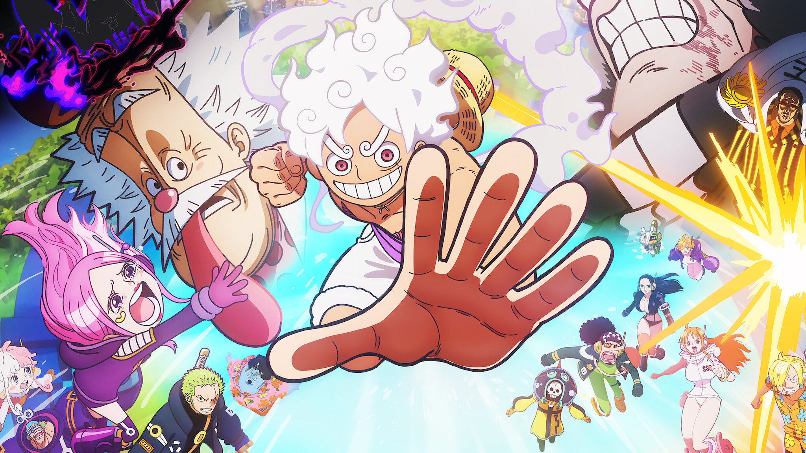
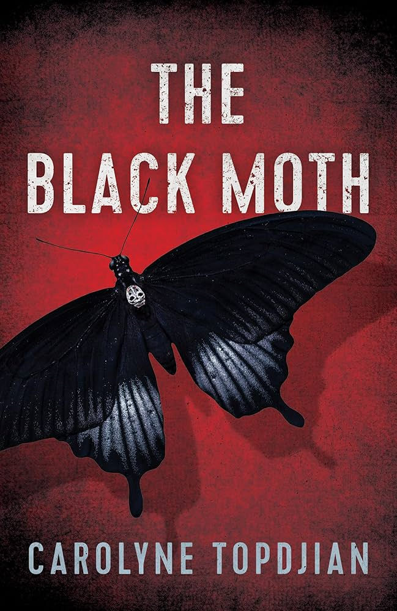
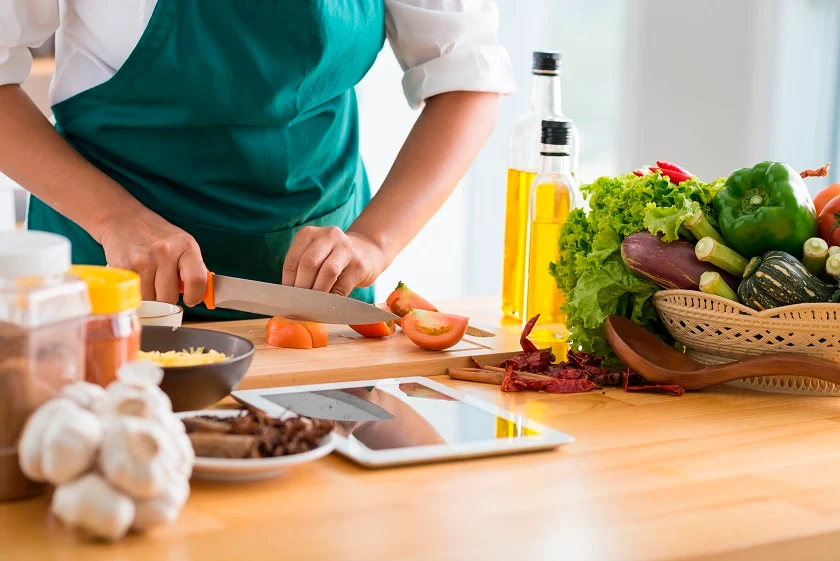
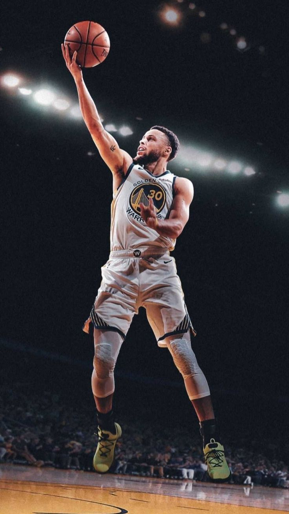

My Hobbies
The activities that bring joy and creativity to my life

� Watching Anime
I'm passionate about anime and the incredible storytelling, character development, and artistic animation styles that bring these stories to life. From action-packed adventures to slice-of-life series.
What I Love About It:
- Complex storylines and character development
- Beautiful animation and art styles
- Learning about Japanese culture
- Discussing theories and episodes with friends
Current Favorite: One Piece & Kaiju No. 8
Genres: Shonen, Action, Adventure

📚 Reading
Books are my gateway to different worlds and ideas. I enjoy getting lost in compelling stories and learning new things from both fiction and non-fiction, especially self-improvement books.
My Reading Habits:
- Focus on self-improvement and productivity books
- Keep notes on key concepts and ideas
- Apply what I learn to daily life
- Balance fiction with practical reading
Current Read: Dark Moth by Carolyne Topdjian
Favorite Genre: Self-improvement, Fantasy
Recent Favorite: Atomic Habits by James Clear

👨🍳 Cooking & Baking
There's something magical about creating delicious meals and treats from scratch. I love experimenting with new recipes and sharing food with family and friends.
What I Enjoy Making:
- Traditional Dal Bhat (rice and lentils)
- Momo (Nepali dumplings)
- Sel Roti (traditional ring-shaped bread)
- Gundruk (fermented leafy green vegetable)
- Aloo Tama (potato and bamboo shoot curry)
Specialty: Traditional Nepali cuisine
Dream: To cook authentic Nepali feast for my Canadian friends

🎵 Music
Music is my emotional outlet and source of energy. I love exploring different genres from classic melodies to modern K-Pop and Afrobeats rhythms.
My Musical Preferences:
- Classic music for relaxation and focus
- K-Pop for energy and motivation
- Afrobeats for their infectious rhythms
- Anime soundtracks and openings
Favorite Genres: Classic, K-Pop, Afrobeats
Mood Music: Varies by activity and time of day
Discovery: Always exploring new artists and sounds

🏀 Playing Basketball
Basketball is my favorite sport for staying active and building teamwork skills. I love the fast-paced nature of the game and the strategy involved in every play.
What I Enjoy:
- Playing pickup games with friends
- Improving my shooting accuracy
- Learning new moves and techniques
- The team coordination and strategy
Favorite Position: Point Guard
Playing Frequency: 3-4 times per week
Goal: Join the college basketball team

💻 Programming & Technology
Beyond my studies, I love exploring new programming languages, building personal projects, and staying up-to-date with the latest technology trends and innovations.
What I'm Learning:
- JavaScript and web development
- Building responsive websites
- Problem-solving with code
- Following tech news and trends
Current Focus: Full-stack web development
Goal: Land an internship in software development
Project: Building personal portfolio websites
My Hobby Journey
Started Watching Anime
Discovered anime through Dragon Ball and became hooked on the medium
Learned to Cook
Started helping in the kitchen making traditional Nepali dishes
Started Playing Basketball
Joined the school basketball team and fell in love with the sport
Discovered One Piece
Started the epic journey with Luffy and the Straw Hat Pirates
Exploring New Interests
Always looking for new hobbies to try and skills to learn!
My Hobby Goals
📈 This Month
- Read 2 new books
- Learn a new recipe
- Take 50 new photos
- Practice guitar daily
🎯 This Year
- Complete a photography project
- Join a new club or team
- Learn advanced JavaScript frameworks (React, Node.js)
- Create a programming portfolio
🌟 Dream Goals
- Have a photography exhibition
- Write my own book
- Cook for a charity event
- Learn a new instrument